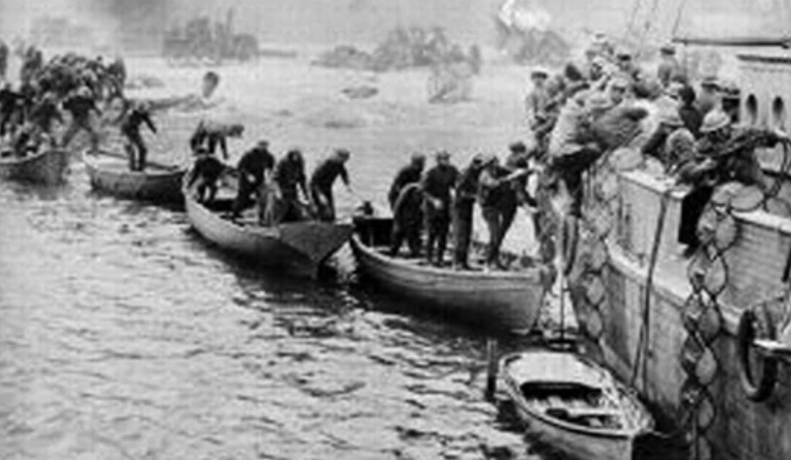
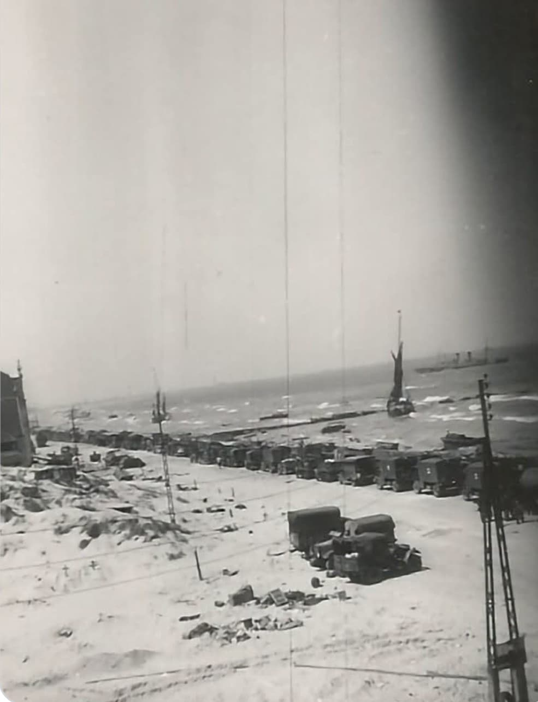

Entre le 26 mai et le 4 juin 1940, plus de 338 000 soldats alliés sont évacués de Dunkerque vers l’Angleterre. L’opération, dirigée par l’amiral Bertram Ramsay, devient un symbole de courage et de survie. Face à l’avancée allemande, Dunkerque est le dernier point d’évacuation possible.
La Royal Navy réquisitionne tout ce qui flotte : destroyers, chalutiers, ferries, remorqueurs, yachts, bateaux de pêche, et les célèbres little ships. Malgré les bombardements de la Luftwaffe, l’évacuation réussit l’impossible : sauver une armée entière.

Interdit aux enfants. Présenté uniquement à des fins historiques.
▶ Voir la vidéo – Opération Dynamo26 mai 1940 – 4 juin 1940
Dunkerque, France
Alliés : Royaume-Uni, France, Belgique
Axe : Allemagne (Wehrmacht, Luftwaffe)
Les armées alliées sont encerclées par les forces allemandes, piégées entre la mer et les divisions blindées. Le port est bombardé, les plages sont sous le feu, et l’évacuation doit se faire dans l’urgence.
Le capitaine William Tennant, nommé « beachmaster », utilise le môle Est comme quai improvisé. Plus de 200 000 hommes y embarquent, quatre par quatre, sous les bombardements.

À partir du 26 mai, navires militaires, destroyers, chalutiers, remorqueurs et plus de 700 little ships civils traversent la Manche. Les bombardements sont constants, les pertes lourdes, mais l’évacuation se poursuit jour et nuit.
Le 2 juin, Tennant envoie le message : « BEF evacuated ». Au total, 338 226 soldats sont sauvés.
Alliés : environ 68 000 morts, blessés ou prisonniers durant la bataille de France. Environ 3 500 morts liés directement à l’évacuation.
Civils : environ 1 000 morts. Dunkerque est détruite à plus de 70 %.
Presque tout le matériel lourd est abandonné : chars, camions, artillerie, munitions. Plus de 200 navires coulés ou gravement endommagés.
Dynamo devient un symbole de résistance. Pour le Royaume‑Uni, c’est le « miracle de Dunkerque » qui permet de continuer la guerre. Pour la France, c’est un épisode tragique mais fondateur de la mémoire dunkerquoise.